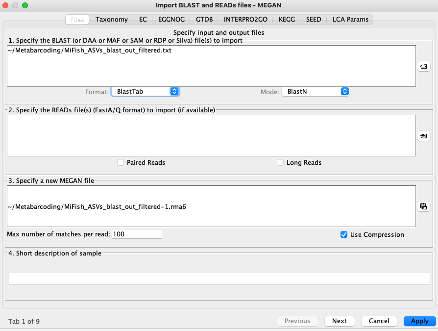
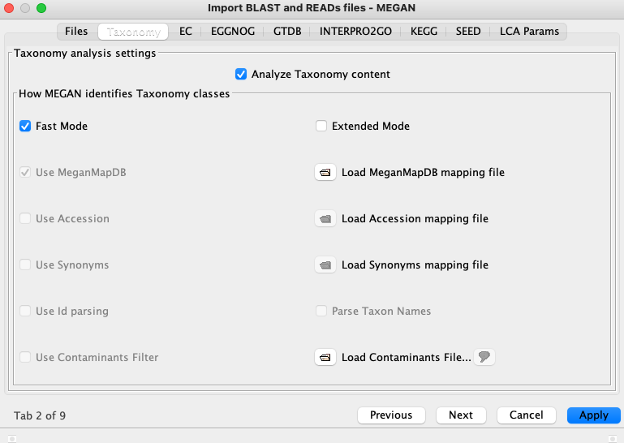
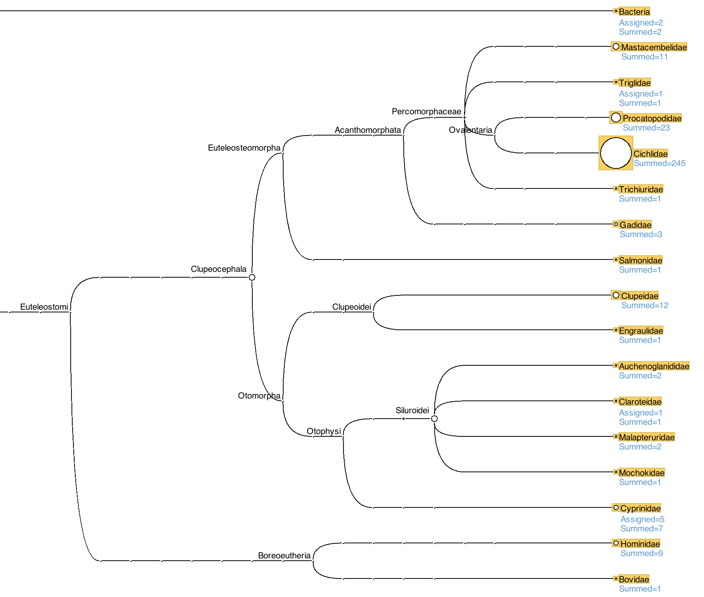

Chapter 5 MEGAN
MEGAN stands for MEtaGenome ANalyzer. It has many tools for analysing metabarcoding data, one of which is to parse BLAST results and assign taxonomy to ASVs using a Lowest Common Ancestor (LCA) algorithm.
The LCA considers all significant BLAST hits and, if these are to reference sequences from multiple species, assigns the taxonomy of the node that lies above all of those species. For example, if an ASV matched equally well to reference sequences of Neolamprologus longior and Neolamprologus gracilis it would be assigned to the genus level as Neolamprologus sp. Similarly, if an ASV matched equally well to reference sequences of Neolamprologus longior and Ophthalmotilapia ventralis it would be assigned at the family level to Cichlidae as both of these species are within that family.
MEGAN is a GUI rather than command line software. It uses the NCBI taxonomy and a mapping file to match NCBI accession numbers (the second column in our blast output table) to taxonomic classes. As these files are large this is not intended to be run on the web VNC, but the workflow is provided in case it is useful for your own data.
5.1 Filtering BLAST results
We already restricted the BLAST hits in our output file by specifying a maximum E-value threshold. It is also useful to further filter out sequences with a low percentage identity or a short alignment length as these are likely to be spurious matches to our ASVs. We can do this easily on the linux command line using an awk command (awk is a programming language useful for text and file processing). Let's filter to keep only hits with a percent identity of at least 90% and an alignment length of at least 100 bp.
5.2 Importing BLAST results into MEGAN
You will need to download your filtered BLAST results from your server, and also a copy of the file to map the NCBI accession numbers to taxonomic classes (available from the MEGAN download site, the current version is named 'megan-nucl-Jan2021.db.zip').
In the MEGAN GUI choose 'File > Import from BLAST', and the options box will be displayed as shown below. Navigate to where your BLAST results file is and fill in the other options as shown.

On the second tab choose 'Load MeganMapDB mapping file' and navigate to where you have saved the 'megan-nucl-Jan2021.db' file. Click 'Apply'.

The taxonomic assignments for our ASVs, derived using the LCA algorithm, will then be displayed as a tree.

We can see that the majority of our MiFish ASVs have been assigned to bony fishes (Clupeocephala), although two have been assigned to bacteria, nine to humans and one to bovids. This helps to explain why some ASVs had no ('NA') taxonomic classification from dada2, as for that assignment we used a curated database only of fish sequences.